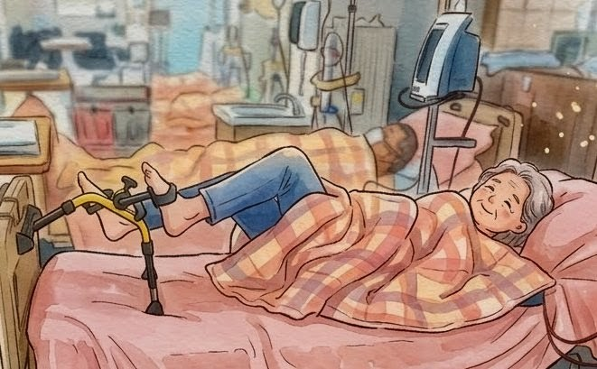

醫師速答
腎友常見的困難是「體力差、怕跌倒、天氣不好不想出門」。坐在椅子上踩踏器，重心穩、不用出門，可以從每次 5 到 10 分鐘開始，慢慢加到每次 20 到 30 分鐘、每週 3 到 5 次。強度以「有點喘、但還能講完整句子」為原則。
開始之前先問過你的主治醫師，特別是有心臟病、最近跌倒過、血壓忽高忽低，或是洗腎的人。
為什麼我會建議腎友「坐著踩」
門診裡我很常聽到：「醫生，我知道要運動，可是走一下就累，膝蓋也痛。」腎臟病走到中後期，肌肉量會慢慢流失，貧血也讓人比較容易喘。這時候叫病人去快走，常常第一週就放棄了。
坐著踩踏的好處是門檻低。膝蓋不用承受全身體重，旁邊有椅背靠，累了腳一停就休息。我在透析中踩腳踏車那篇提過，洗腎室裡躺著踩的臥式腳踏車是有研究基礎的；回到家裡，這台小小的腳踏器是同一個概念的簡化版，強度比較低，但每天都做得到。
要說清楚的是，它是運動器材，不是治療。它不會讓腎功能變好，能做到的是幫你維持腿部肌力、讓久坐的時間不要完全靜止。能這樣持續下去，就已經很不錯了。
三種用法
放桌上，手搖
腳不方便、或想順便活動肩膀與手臂時用。
放地上，腳踩
椅子或穩固的沙發都可以，不要坐有輪子的椅子。

洗腎時，躺在床上踩
把腳踏器的一端抵住床尾，踩的時候才不會滑開。開始之前先問過透析室的護理師；血壓偏低或頭暈的時候先不要踩。
誰可以直接開始，誰要先問醫師
| 你的狀況 | 建議 |
|---|---|
| 慢性腎臟病，平常能自己走路、沒有心臟問題 | 可以從低阻力、每次 5 到 10 分鐘開始 |
| 有心臟病、心衰竭，或最近住過院 | 先問主治醫師，確認可以運動的強度 |
| 血液透析 | 避免在洗腎剛結束、血壓偏低或頭暈時踩；有瘻管的那隻手不要用手搖模式施力 |
| 腹膜透析 | 腹部有透析液時，以不會覺得肚子脹痛的姿勢為準，有疑問先問透析護理師 |
| 最近跌倒過、站起來會頭暈 | 一定要坐有椅背、不會滑動的椅子；第一次旁邊要有家人 |
| 胸痛、休息時也喘、血壓控制不穩 | 先不要開始，回診處理 |
怎麼開始
我通常會建議第一週先把阻力調到最鬆，每次踩 5 到 10 分鐘就好。這週的目標只有一個：讓它變成習慣，例如固定在看晚間新聞的時候踩。
第二週以後，每次多加幾分鐘，慢慢拉到 20 到 30 分鐘。踩到微微出汗、有點喘但還能講完整句子，強度就剛好。再往上調阻力之前，先確認隔天腿不會痠到走不動。腳踏器上的計數器可以拿來記錄，下次回診帶來給我看，比「有啦有在動」具體得多。
商品資訊
以下規格整理自耆妙屋商品頁，價格與優惠活動請以官網顯示為準。
- 商品名稱
- 【耆妙屋】復健腳踏器（可折疊、可計數）
- 功能
- 腳踩／手搖兩用、可調鬆緊、計數顯示、可折疊收納
- 尺寸
- 47 × 39 × 25 公分
- 重量
- 2.31 公斤
- 材質
- 鐵管烤漆、PP 踏板、橡膠腳墊
- 產地／保固
- 台灣製造／一年
- 電池
- 計數器需 4 號電池一顆
購買步驟
- 點下方按鈕，會開到耆妙屋的商品頁。
- 先註冊會員（畫面上的「註冊並領取」），註冊成功會拿到新會員購物金，金額以官網通知為準。
- 回到商品頁加入購物車結帳，結帳時可以折抵購物金。
- 有商品或出貨問題，請直接找耆妙屋客服（網路客服 02-2325-9300 #17，LINE
@inc4931c）；使用上的問題可以到Facebook 粉絲團留言問我，或來信。
什麼情況要馬上停下來
停止運動，休息後沒改善就就醫
- 胸悶、胸痛，或喘到講不出話
- 頭暈、眼前發黑、冒冷汗
- 心跳亂跳或突然變很快
- 小腿單側突然腫痛
- 洗腎的人：瘻管處疼痛，或摸不到平常的震顫感